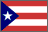
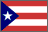

David Bar-Tzur
David Bar-Tzur 


Flags: World flag database.
Map: Virtual Tourist.
For a quick, interesting resource for facts about this and other countries,
try Mystic Planet - The New Age directory of Planet Earth.
Explanation of glossing system used
(to understand how I describe the signs in this dictionary)